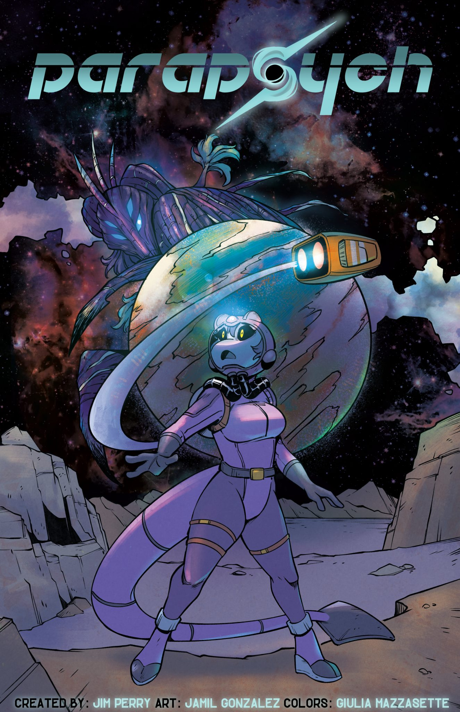
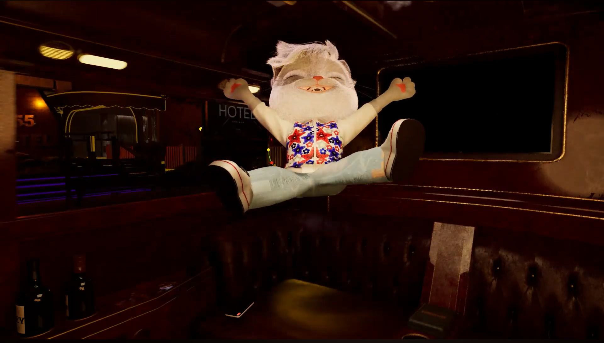
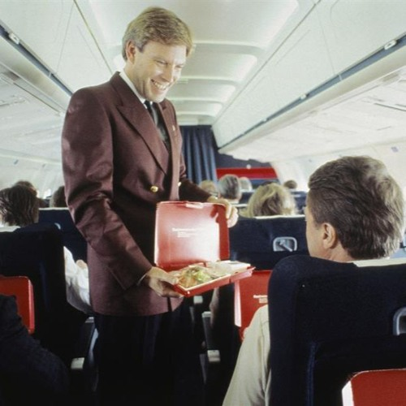

My catalogue of sound design and music production for multi-media projects such as animation, audio books, and more.

Parapsych - Sound Design & Post-production

VR Cartoon Foley & Sound Effects

Narrative Sound Effects


Parapsych - Sound Design & Post-production
Parapsych is a Sci-Fi visual novel with a classic comic style theme for which I am hired to deliver all the sound effects, edit the voice overs, mix and master the final audio production for the video sequence which is being developed as we speak. It tells a story about loss, and it follows the misadventures of Fae, Cho and Nell as they try to navigate a galaxy cold to their plight.
About the creator: Jim has been writing stories, GMing TTRPG games and constantly creating various projects for well over thirty years. Jim constantly thrives to create worlds and stories that people can get lost in. Whether it’s a fantasy realm, a steampunk city or a sci-fi expanse, Jim brings an intoxicating mix of suspense, comedy and intrigue to all of his projects.
Find more information about the project on the official website.
Skills and deliverables
- Foley Effects
- Sound Design
- Audio Editing
- Mixing & Mastering
VR Cartoon Foley & Sound Effects
This is a sample submission I did for a VR animated experience. I was provided with the voice over and I had to adapt the entire audio as part of the application. This is my final result which I built using my own foley assets and audio editing skills.
Skills and deliverables
- Foley Effects
- Sound Design
- Audio Editing
- Mixing & Mastering
Narrative Sound Effects
For this project, I was hired on Upwork to create and implement the sound effects and edit the voice over for a narrative book.
Skills and deliverables
- Foley Recording
- Audio Editing
- Sound Design
- Mixing & Mastering